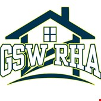

The Chess Club at GSW offers the opportunity for competitive over-the-board chess competition, participation in on-campus chess tournaments, and chess instruction for those interested in learning the game.
Department of Music
Primary Contact: Mark Laughlin
The music program stresses individual attention in presenting the discipline of music. The program is looking for people who enjoy performing and working together to bring out a high level of musicianship.
Educators Rising
Primary Contact: Parker Matre
Educators Rising at Georgia SouthWestern is a service based, academic organization that allows future educators to work along their peers and rise above to become accomplished teachers.
Engineering Club
Primary Contact: Anirudh Gattu
GSW's Pre-Engineering program reduces half in size every year. There were less than 20 students in the 2019 Pre-Engineering batch. The organizational goal for our initial year is to initiate more interest in engineering.
First Year Experience
Primary Contact: David Jenkins
The Office of First-Year Experience is committed to providing a comprehensive and collaborative approach to ensure the success and retention of first-year students.
Geology Club
Primary Contact: Samuel Peavy
Open to all students, faculty and staff that are interested in Earth or environmental sciences.
Gospel Choir
Primary Contact: Lorelle Carey
We are Divided by Sections but, United in Christ !! Your Gospel Choir.
NPHC
Primary Contact: Jamee Caldwell
The National Pan-Hellenic Council (NPHC) is a collaborative organization of nine historically African American, international Greek lettered fraternities and sororities.

Residence Hall Assocation
Primary Contact: Chelsea Harper
RHA (Residence Hall Association) is a student-run organization that offers leadership opportunities for on-campus residents, and promotes a positive 'home away from home' experience through collaboration.
SAAB
Primary Contact: Dontavious Brown
Student African American Brotherhood is an orginization that assists men of color to realize and achieve their fullest potential by fostering a "spirit of caring" and to transform themsevles by changing their attitudes.
Student Government Association
Primary Contact: Alejandro Espitia
The Student Government Association is made up elite group of students who exist to represent the interests of the Student Body. We strive to increase our student involvement and school spirit.
Wesley Foundation
Primary Contact: Evelyne Snipes
A campus ministry open to all students of GSW. We have Bible Study, which includes dinner, worship, and a message, on Tuesday nights from 6:30 pm to 8:00 pm. We also have lunch on Thursdays from 11:00 am to 1:30 pm.